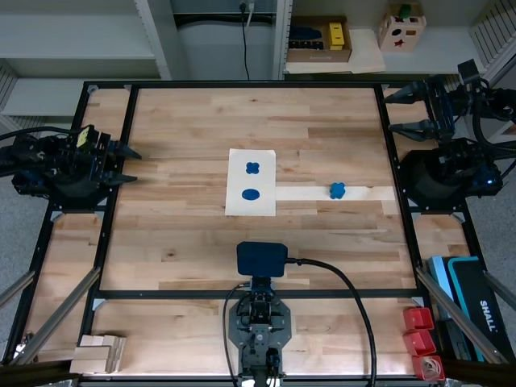
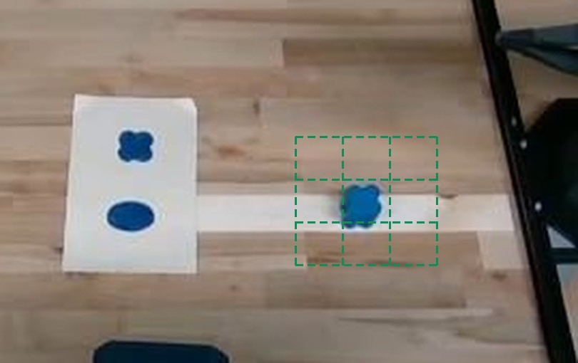
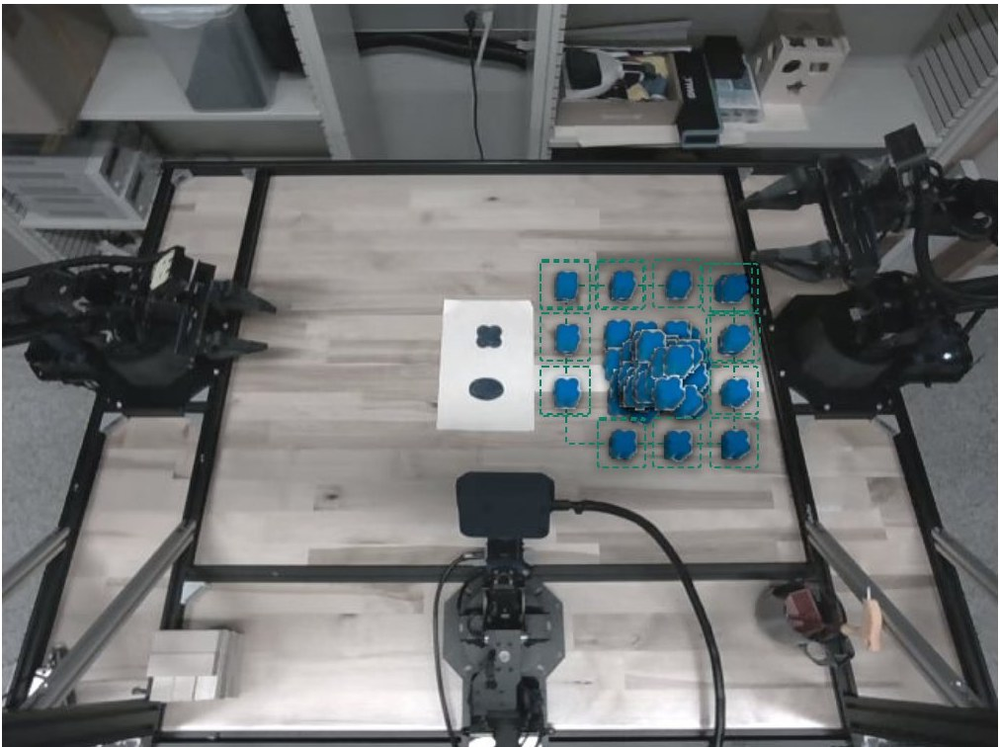

Robots Learning to Recover
This page supplements my paper, Helping Robots Recover From Their Mistakes, with videos and images from my experiments in the lab. It covers the setup, the task, how I collected data and trained the robot, and what the robot did when it ran on its own.
The setup
The setup is a tabletop version of ALOHA with a few modifications. Three robot arms are mounted around a table, each with six joints and a two-finger gripper. Each arm has a camera on its gripper, and two more cameras watch the table, one from above and one from a low angle at the side. I control the arms by teleoperation, using a virtual-reality headset and hand controllers. Only one arm moves in these experiments.
The task
The robot has to pick up a blue flower-shaped block and place it on the matching flower printed on a sheet of paper.

Recording demonstrations
What to watch forAt 5.2 seconds I squeeze the trigger and the fingers start to close.
This is one of my demonstrations, recorded through teleoperation with the headset and hand controllers. I control the arm the whole time. I recorded 50 demonstrations like this one.


Testing the first policy
After training a first policy on these 50 demonstrations, I placed the block in each of the nine squares of the grid above and let the robot run on its own. It had seen the block near all of these positions, so in principle it could do the task. It placed the block on the flower in only 2 of the 9 attempts. This is one common way it failed.
What to watch forAround 6 seconds, the fingers close but the block slips out to the side. In the left view, the block stays on the table while the arm lifts and carries on to the flower with nothing in its grip.
Every example this policy learned from showed a clean grasp followed by a carry. None showed what to do when the block stays behind, so it had no example of going back for it.
Taking over to correct it, then handing control back
For the next round, I let the policy drive and watched. When I saw a mistake coming, I pressed the button and took over, made the correction, and let go. The policy then continued from wherever the arm was. This procedure is based on a method called HG-DAgger.
What to watch forBetween about 1 and 3 seconds, the right finger comes down in line with the edge of the block instead of beside it. I take over at 3.1 seconds, shift the gripper so the block sits between both fingers, and close them. At 7.1 seconds I let go, and the policy carries the block to the flower and releases it.
The bar under the video shows who was in control as it plays. I estimated the takeover times from the recorded commands, to within about a tenth of a second.
I take over just before the mistake, so the recording shows how to get out of a situation the policy itself got into, which my clean demonstrations never showed.
I recorded 57 episodes this way. In 12 of them the policy finished on its own and I never took over.
After retraining, a recovery
I retrained the policy on 94 episodes: my 50 demonstrations plus the 44 correction episodes in which I had taken over and the block ended on the flower. Then I let it run on its own.
What to watch forThe first approach, around 4 to 7 seconds, doesn’t end in a grasp, and the block shifts. The arm doesn’t carry on empty this time. It moves around the block, closes on it at about 12 seconds, and sets it on the flower at about 16 seconds.
On the same nine starting positions, the retrained policy placed the block on the flower in 8 of 9 attempts, compared with 2 of 9 for the policy trained on my first 50 demonstrations. Two of those 8 recovered from a bad first approach like the one above. The retrained policy also had more data and slightly different training settings, so this isn’t a controlled test of the corrections alone, but the jump is large.
Adjustments I didn’t teach
Later I recorded 22 more demonstrations from a wider area around the first grid and trained new versions of the policy on 128 episodes in total.

Sometimes these versions did things I hadn’t deliberately demonstrated.
What to watch forFrom about 2 to 13 seconds, the fingertips push the block along the table instead of closing around it. In the overhead view on the right, you can see the block move.
After the push, the arm lines up with the block, grasps it at about 19 seconds, and releases it on the flower at about 25 seconds.
I can describe what the arm did, but not why it did it. The recording doesn’t show whether the push made the grasp easier, or whether the policy would have grasped the block without it. I hadn’t taught this push-then-grasp sequence on purpose, and that’s what caught my attention.
These were imitation learning policies, so the arm wasn’t exploring. It was reproducing patterns from my recordings. Still, seeing behavior like this is what led me to wonder whether the arm could explore on its own.
Two more attempts from the same family of policies:
Closed on nothing, then went back. The fingers close beside the block at about 7 seconds, open again, and move back to it. The arm grasps the block at about 18 seconds and carries it to the flower.
Stood a fallen block back up. The block tips onto its side. The arm pushes it and, on the second try, it’s upright again. The arm then grasps it and sets it down next to the flower, not on it.
All 128 training episodes ended with the block on the flower, but not every movement inside them was clean. 44 come from the correction round, so they also contain the policy’s own mistakes in the moments before I stepped in.
Why this points me toward language and rewards
Each round of improvement was slow. Recording 50 demonstrations took up to two hours, training took several hours or ran overnight, and testing took about half a day. Every correction also meant taking over and performing the movement myself, even when the change I wanted was as simple as “move slightly left before closing the gripper.”
Two research directions from other labs speak to this. I have not implemented either of them myself.
- Correcting with words. In Yell At Your Robot, a person changes what the robot does by giving a new instruction instead of taking over the controls. The researchers then use those spoken corrections to improve how the robot chooses its own instructions.
- Learning from rewards. DSRL keeps an existing diffusion policy fixed and trains a second, small policy to steer it, using a reward that scores how each attempt turned out.
The pushing and re-grasping clips above are why the second direction appeals to me. If a robot sometimes produces adjustments I never demonstrated, a reward for getting the block onto the flower might help it find and keep the useful ones, without me having to perform every recovery myself.